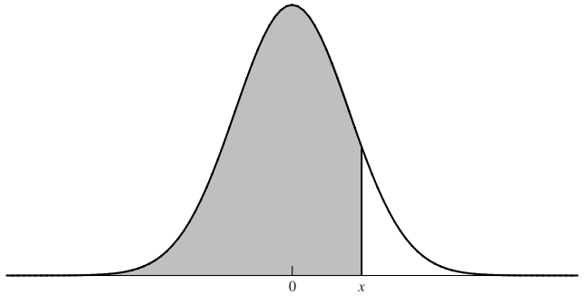

9 Option Pricing - Black-Scholes Model
- HULL, John. Options, futures, and other derivatives. Ninth edition. Harlow: Pearson, 2018. ISBN 978-1-292-21289-0.
- Chapter 15 - the Black-Scholes-Merton Model
- PIRIE, Wendy L. Derivatives. Hoboken: Wiley, 2017. CFA institute investment series. ISBN 978-1-119-38181-5.
- Chapter 4 - Valuation of Contingent Claims
- Black, F., & Scholes, M. (1973). “The pricing of options and corporate liabilities”. Journal of political economy, 81(3), 637-654.
- Merton, Robert (1973). “Theory of Rational Option Pricing”. Bell Journal of Economics and Management Science. 4 (1): 141–183.
Learning Outcomes:
- Understand the core principles of the Black-Scholes-Merton model and its role in option pricing.
- Interpret key parameters, assumptions, and limitations of the model in practical contexts.
- Grasp the role of risk-neutral valuation in derivative pricing and risk management.
- Analyze how dividends affect option pricing within the Black-Scholes-Merton framework.
- Explore how volatility impacts option values and shapes investor strategies.
9.1 Black-Scholes-Merton Model
Developed by Fischer Black and Myron Scholes (1973), the Black-Scholes-Merton model provides a closed-form solution for pricing European call and put options. It assumes a lognormal stock price distribution and continuous trading, and does not account for dividends.
The model prices options based on key variables: stock volatility, risk-free rate, strike price, and time to maturity.
The binomial model (Cox, Ross, and Rubinstein, 1979) offers a discrete-time alternative that accommodates American options and dividends. As the number of time steps increases, binomial results converge to the Black-Scholes formula—demonstrating their close theoretical link.
Model Assumptions
To derive its closed-form solution, the Black-Scholes-Merton model relies on these assumptions:
- European options only (exercise at maturity)
- No dividends paid during the option’s life
- No arbitrage opportunities
- Unlimited short selling allowed
- No transaction costs or taxes
- Constant risk-free rate over the life of the option
- Constant volatility of stock returns
- Geometric Brownian motion governs asset price behavior (no jumps, continuous prices)
- Continuous trading and perfect liquidity
Black-Scholes-Merton Pricing Formulas
Let:
- \(c\) = price of a European call option
- \(p\) = price of a European put option
- \(S_0\) = current stock price
- \(K\) = strike price
- \(T\) = time to expiration (in years)
- \(r\) = risk-free interest rate (continuously compounded)
- \(\sigma\) = volatility of stock returns
- \(N(x)\) = standard normal cumulative distribution function
The option prices are:
\[ c = S_0 N(d_1) - K e^{-rT} N(d_2) \] \[ p = K e^{-rT} N(-d_2) - S_0 N(-d_1) \]
Where:
\[ d_1 = \frac{\ln(S_0 / K) + (r + \frac{1}{2} \sigma^2)T}{\sigma \sqrt{T}}, \quad d_2 = d_1 - \sigma \sqrt{T} \]
The \(N(x)\) Function
\(N(x)\) gives the probability that a standard normal variable is less than \(x\). It’s used to weight the expected payoffs under the risk-neutral measure. Values can be obtained from statistical tables or Excel’s NORM.DIST function.

Given:
- \(S_0 = 42\), \(K = 40\), \(r = 10\%\), \(\sigma = 20\%\), \(T = 0.5\)
Step 1: Compute \(d_1\) and \(d_2\)
\[ d_1 = \frac{\ln(42/40) + (0.1 + 0.2^2 / 2) \times 0.5}{0.2 \sqrt{0.5}} = 0.7693 \] \[ d_2 = 0.7693 - 0.2 \sqrt{0.5} = 0.6278 \]
Step 2: Find \(N(d_1)\) and \(N(d_2)\)
From Excel or tables:
- \(N(0.7693) = 0.7791\), \(N(0.6278) = 0.7349\)
- \(N(-0.7693) = 0.2209\), \(N(-0.6278) = 0.2651\)
Step 3: Discounted strike price
\[ K e^{-rT} = 40 e^{-0.1 \times 0.5} = 38.049 \]
Step 4: Compute call and put prices
\[ c = 42 \times 0.7791 - 38.049 \times 0.7349 = 4.76 \] \[ p = 38.049 \times 0.2651 - 42 \times 0.2209 = 0.81 \]
9.2 Interpretation of \(N(d_1)\) and \(N(d_2)\)
Understanding \(N(d_1)\) and \(N(d_2)\) helps uncover the probabilistic foundation of the Black-Scholes formula.
Interpretation 1: Probabilistic Meaning
\(N(d_2)\):
Interpreted as the risk-neutral probability that the call option will be exercised—i.e., the stock price ends up above the strike at maturity.\(S_0 e^{rT} N(d_1)\):
Represents the expected stock price in a risk-neutral world, conditional on the option being in the money. It adjusts for scenarios where the option would expire worthless.Expected Payoff and Present Value:
The expected payoff is:
\[ S_0 e^{rT} N(d_1) - K N(d_2) \]
Discounting back gives the call price:
\[ c = S_0 N(d_1) - K e^{-rT} N(d_2) \]
Interpretation 2: Weighted Expectation Form
Rewriting the call price:
\[ c = e^{-rT} N(d_2) \left( \frac{S_0 e^{rT} N(d_1)}{N(d_2)} - K \right) \]
- \(e^{-rT}\): Present value factor
- \(N(d_2)\): Probability of exercise
- \(\frac{S_0 e^{rT} N(d_1)}{N(d_2)}\): Expected stock price if the option is exercised
- \(K\): Exercise cost
This interpretation views the option price as the discounted expected gain, weighted by the probability of exercise.
9.3 Properties of the Black-Scholes Formula
Understanding how option prices respond to changes in the underlying price (\(S_0\)) provides key insights:
When \(S_0 \to \infty\)
- Call option (\(c\)):
- \(d_1, d_2 \to \infty\) → \(N(d_1), N(d_2) \to 1\)
- \(c \to S_0 - K e^{-rT}\)
The call’s value approaches its intrinsic value.
- Put option (\(p\)):
- \(N(-d_1), N(-d_2) \to 0\)
- \(p \to 0\)
Exercise becomes unlikely.
When \(S_0 \to 0\)
- Call option (\(c\)):
- \(d_1, d_2 \to -\infty\) → \(N(d_1), N(d_2) \to 0\)
- \(c \to 0\)
The option is unlikely to be exercised.
- Put option (\(p\)):
- \(N(-d_1), N(-d_2) \to 1\)
- \(p \to K e^{-rT} - S_0\)
The put gains intrinsic value as the likelihood of exercise increases.
9.4 Risk-Neutral Valuation
Risk-neutral valuation is a foundational concept in derivative pricing. It simplifies option valuation by assuming all investors are indifferent to risk, so all assets earn the risk-free rate, regardless of their risk.
In the Black-Scholes-Merton model, a key insight is that the expected return of the underlying asset (\(\mu\)) does not appear in the model’s differential equation. This implies that the option price is unaffected by investor risk preferences. Instead, pricing can be carried out in a risk-neutral world—a hypothetical setting where all assets grow at the risk-free rate.
This approach abstracts from real-world risk attitudes while preserving arbitrage-free pricing, making it both elegant and widely applicable.
Key Principles
- Risk-neutral assumption: All assets are priced as if they earn the risk-free rate.
- Exclusion of \(\mu\): The model’s differential equation omits the asset’s real-world expected return, reinforcing the irrelevance of risk preferences.
- Pricing by expected payoff: Derivatives are priced as the present value of expected payoffs under risk-neutral probabilities.
How to Apply Risk-Neutral Valuation
A three-step process:
Assume the stock earns the risk-free rate
Under the risk-neutral measure, expected return = \(r\).Compute expected payoff
Calculate \(E[\max(S_T - K, 0)]\) (for a call) using risk-neutral probabilities.Discount at the risk-free rate
Present value = expected payoff × \(e^{-rT}\)
Let \(K\) be the strike price, and \(S_T\) the stock price at expiration. Under risk-neutral valuation:
- Expected payoff: \(E[\max(S_T - K, 0)]\)
- Present value of the call option:
\[ c = e^{-rT} \cdot E[\max(S_T - K, 0)] \]
This principle is the foundation of both Black-Scholes and binomial option pricing models.
9.5 The Effect of Dividends
Dividends can significantly impact option pricing. When a stock pays dividends, its price typically drops on the ex-dividend date—affecting both European and American options. The Black-Scholes model must be adjusted to account for this.
Valuing European Options on Dividend-Paying Stocks
To price European options on dividend-paying stocks, adjust the stock price by subtracting the present value of expected dividends paid during the option’s life:
\[ S_{\text{adj}} = S_0 - PV(\text{dividends}) \]
Only dividends paid before expiration are included. This adjustment reflects the expected stock price drop due to dividend payouts and ensures accurate option valuation.
American Calls and Early Exercise with Dividends
In general, American call options should not be exercised early. However, when the stock pays dividends, early exercise may be optimal—especially just before an ex-dividend date.
When Early Exercise Makes Sense
Early exercise is more likely when the dividend exceeds the time value lost by exercising:
\[ \text{Exercise if: } \text{Dividend} > K \left(1 - e^{-r (t_{i+1} - t_i)}\right) \]
Where: - \(K\): strike price
- \(r\): risk-free rate
- \(t_i\), \(t_{i+1}\): timing of dividend intervals
This condition compares the immediate dividend gain with the option’s remaining time value.
Black’s Approximation for American Calls with Dividends
Black’s Approximation offers a simple way to estimate the value of American calls on *dividend-paying stocks:
- Price a European call using the adjusted stock price (subtracting dividends).
- Price a second European call that expires just before the final ex-dividend date.
- Take the maximum of the two as an estimate for the American call value.
This method avoids complex early exercise modeling while still accounting for dividend impact. It strikes a balance between practicality and precision, and is widely used in industry.
9.6 Volatility in Financial Markets
Volatility measures the degree of variation in an asset’s price over time. In option pricing, it represents the level of uncertainty or risk about future price movements and plays a central role in determining option value.
- Definition: Volatility (\(\sigma\)) quantifies the expected variability in asset returns.
- Typical Range: Annual volatility for stocks often falls between 15% and 60%.
- Impact on Options: Higher volatility increases the value of both calls and puts—more uncertainty means a greater chance of large payoff.
- Not Directly Observable: Volatility must be estimated—either from historical returns or implied from option prices.
Historical Volatility
Calculation: Standard deviation of past continuously compounded returns, usually annualized.
Daily Example: For a $30 stock with 25% annual volatility:
\[ \text{Daily Volatility} = 25\% \times \sqrt{\frac{1}{252}} = 1.57\% \]
Annualization: Multiply daily standard deviation by \(\sqrt{252}\) to express it on a yearly basis.
During Market Hours: Volatility is typically higher due to real-time reactions to news and events.
Trading Days Convention: Option time to maturity is measured in trading days, not calendar days—reflecting actual exposure to market activity.
Implied Volatility (IV)
- Definition: The market’s expectation of future volatility, implied from option prices via models like Black-Scholes.
- VIX Index: A benchmark measure of implied volatility for the S&P 500.
VIX Website ↗
Volatility Smile and Surface
- Volatility Smile: Shows how implied volatility varies across strike prices.
- Volatility Surface: Extends the smile across different maturities.
- Market Anomalies: Deviations from a flat surface (assumed in BSM) highlight real-world frictions, changing risk preferences, or event risk.
Role of Implied Volatility in Option Trading
- Market Expectations: Higher IV signals higher expected future price movement → more expensive options.
- Quote Standard: Options are often quoted by implied volatility instead of price.
- Relative Valuation: IV allows comparison of options beyond intrinsic value or time decay.
- Repricing Over Time: As market sentiment shifts, IV adjusts—impacting option values and trading strategies.
- Sentiment Indicator: Rising IV often signals increased fear or uncertainty.
- Communication Tool: IV serves as a universal metric for discussing risk and valuation—used by traders, regulators, and risk managers.
9.7 Practice Questions and Problems
Name some assumptions of the Black-Scholes-Merton model. Compare with the real world and explain potential issues.
Explain the principle of risk-neutral valuation.
Calculate the price of a three-month European put option on a non-dividend-paying stock with a strike price of $50 when the current stock price is $50, the risk-free interest rate is 10% per annum, and the volatility is 30% per annum. (Tip: Use Excel function NORMDIST to calculate \(N(x)\))
Put option price = 2.37
- What difference does it make to your calculations in the previous Problem if a dividend of $1.50 is expected in two months? (Tip: Use Excel function NORMDIST to calculate \(N(x)\))
Put option price = 3.03
- What is the price of a European call option on a non-dividend-paying stock when the stock price is $52, the strike price is $50, the risk-free interest rate is 12% per annum, the volatility is 30% per annum, and the time to maturity is three months?
Call option price = 5.06
- What is the price of a European put option on a non-dividend-paying stock when the stock price is $69, the strike price is $70, the risk-free interest rate is 5% per annum, the volatility is 35% per annum, and the time to maturity is six months?
Put option price = 6.40
- Consider an option on a non-dividend-paying stock when the stock price is $30, the exercise price is $29, the risk-free interest rate is 5% per annum, the volatility is 25% per annum, and the time to maturity is four months.
- What is the price of the option if it is a European call?
- What is the price of the option if it is an American call?
- What is the price of the option if it is a European put?
- Verify that put–call parity holds.
European call = 2.52 European put = 1.05
What is implied volatility? How can it be calculated?
The volatility of a stock price is 30% per annum. What is the standard deviation of the percentage price change in one trading day?
1-day std. = 1.9%
What is the actual implied volatility of the S&P 500? Try to interpret the value.
A call option on a non-dividend-paying stock has a market price of $2.50. The stock price is $15, the exercise price is $13, the time to maturity is three months, and the risk-free interest rate is 5% perannum. What is the implied volatility?
Implied volatility = 39.6%